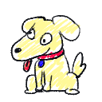

절대_바이러스_아님_진짜_전_돌고래임.exe
숙제(안함)
V3보다좋음.exe
야한거아님.zip
공부자료.exe
휴지통
1 구간
할당량
0 / 200 MB
남은 시간
03:00
진행률
0%
완료!
업데이트 중…60MB
⏸ 업데이트 중단됨!
업데이트0%
못나가요 ㅋㅋ
이 프로그램은 종료할 수 없습니다.
확인
:(
업데이트에 실패했습니다
제한시간 내에 할당량을 채우지 못했어요.
*** STOP: 제한시간 초과 · 0/0 MB
완료 파일 0 · 제거 0 · 정확도 0%
TIP:
폭탄은 시간이 지나면 터져 -20%! 보이는 즉시 우선 처치하세요.
완료!
정리 진행도0 / 0
클릭 또는 아무 키나 눌러 건너뛰기
업데이트 완료
업데이트가 성공적으로 완료되었습니다.
완성한 파일0
제거한 방해꾼0
최고 콤보x0
진짜_최종_final_수정_진짜최종(5).exe
기획김주안
PM조예린
아트황유정 · 황다은
검색 도우미

사운드
사운드는 아직 없어요 — 값만 저장해뒀다가 나중에 붙일게요.
화면
강도
저장 데이터
이어할 구간과 완성한 그림이 모두 사라집니다.
튜토리얼
다음 실행에 인트로 튜토리얼을 다시 보여주고, 이 토글도 자동으로 켭니다.
조작법
- 마우스 클릭 — 처치
- ESC — 설정
수집 0 / 36
발견 0 / 18
업데이트 준비 중입니다...
잠시만 기다려 주십시오 . . .
MyWindows XP
부팅 중 . . .